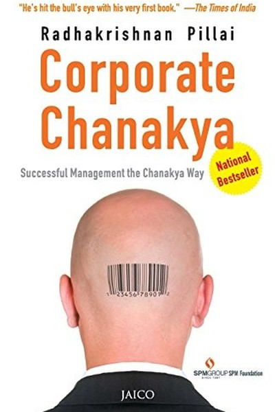

Library › Power & Strategy
Corporate Chanakya — Summary & Key Lessons

Chanakya's 2,300-year-old management manual.
📖 OPEN THE FULL INTERACTIVE BREAKDOWN →🌐 Read it in Hindi, Hinglish, Gujarati, Tamil & 22 more languages — free, with audio.
💡 The Big Idea
Radhakrishnan Pillai translates the Arthashastra — Chanakya's 2,300-year-old treatise on statecraft — into practical management wisdom for modern Indian professionals. The book applies Chanakya's principles to leadership, strategy, negotiation, team-building and career: from 'the king's first duty is to protect the people' (the leader serves the team) to 'win the enemy before the war begins' (strategy beats conflict). Pillai's core message: the timeless rules of power, planning and people-management were written in India first — and the professional who masters them has a native edge that no imported management textbook can provide.
🧠 The 6 Key Lessons
Lesson 1: The King's Duty: A Leader Exists to Protect and Grow the Team
Part 1: Leadership
Chanakya's first principle of kingship: the ruler's primary duty is the welfare of the people — a kingdom where citizens flourish becomes powerful; one where citizens are exploited collapses from within. Pillai translates this directly: a leader's first duty is to the team — their growth, safety and morale. The manager who treats the team as a resource to be consumed gets compliance; the leader who treats the team as people to be developed gets commitment. Chanakya's warning is stark: a leader who enriches himself at the team's expense is building his own replacement — the team eventually finds a better king.
📖 Example: Pillai contrasts two managers: one who takes credit and hoards resources, and one who builds the team's skills and visibility. The second gets loyalty and results that survive leadership changes; the first is abandoned at the first crisis. Read the full example →
⚡ Do this: List three ways you currently invest in your team's growth (skills, visibility, safety). Add one this week that costs you something — that's the Chanakya tax.
Lesson 2: Win Without War: Strategy Is Cheaper Than Conflict
Part 2: Strategy
Chanakya's most famous preference: the wise king wins through strategy, alliance and preparation — war is the last resort, the most expensive tool. Pillai applies this to the workplace: the professional who outworks, out-prepares and out-positions wins without needing to fight. The negotiator who knows the other side's position better than they do wins before the meeting; the employee who is indispensable wins without office politics. The lesson: most conflicts are failures of strategy — if you have to fight, you probably prepared too late. Invest in preparation, relationships and information so that victory arrives quietly.
📖 Example: Chanakya's own career is the proof: he installed Chandragupta as emperor through alliance, strategy and preparation — not through a standing army. The planning was the power. Read the full example →
⚡ Do this: Pick one upcoming 'conflict' (negotiation, review, pitch). Invest 2 hours this week in preparation — data, positions, alternatives — so you win before the conversation.
Lesson 3: The Six-Fold Policy: Know When to Make Peace and When to Fight
Part 3: The Policy
The Arthashastra's famous 'six-fold policy' (shadgunya) gives the king six strategic postures — alliance, war, neutrality, marching, seeking shelter, and duplicity — and instructs that the choice depends on relative strength. Pillai's translation: strategy is situational, not ideological. Sometimes you ally (partner with a stronger player), sometimes you fight (defend your core), sometimes you wait (build strength silently). The naive professional uses one posture for everything; the wise one reads the balance of power and picks the posture that fits. Flexibility is not weakness — it is strategic literacy.
📖 Example: Pillai shows how a small company should ally with larger players rather than fight them, while a strong company should compete aggressively where it has the edge. The posture follows the power balance. Read the full example →
⚡ Do this: Assess your current 'balance of power' in one key relationship or market. Choose the posture that fits — ally, wait, or compete — and act accordingly this month.
Lesson 4: The Treasurer's Wisdom: Money Is the Sinew of Every Enterprise
Part 4: Finance
Chanakya devotes enormous attention to the treasury: 'from the treasury comes the army; from the army comes power; from power comes victory.' Pillai's translation: cash is the sinew of any organization — the company with reserves survives shocks, negotiates from strength, and can wait out competitors. The personal parallel: your savings are your strategic reserve. The person with six months of expenses can say no to bad deals, bad bosses and bad times; the person living month-to-month is perpetually negotiating from weakness. Chanakya's finance rules — track every rupee, avoid waste, build reserves — are a 2,300-year-old personal finance course.
📖 Example: Pillai notes how kingdoms with full treasuries could wait through bad harvests and buy alliances, while empty treasuries forced desperate and disastrous decisions — the modern echo is the company or family that must accept bad terms because it has no cushion. Read the full example →
⚡ Do this: Build your strategic reserve: commit to saving one month of expenses this year. Track every outflow this week and cut one waste — the treasury is the sinew.
Lesson 5: The Spies' Network: Information Is the Greatest Weapon
Part 5: Intelligence
Chanakya's elaborate spy network — informants in every market, court and enemy camp — was his most powerful instrument. Pillai's translation: in modern terms, this is market intelligence and information asymmetry. The professional who knows what customers actually want, what competitors are actually doing, and what decision-makers actually value, operates with a decisive edge. Information is not gossip — it is systematically gathered, verified and used. The lesson: build your intelligence network — talk to customers directly, study competitors' moves, read the numbers behind the stories. The best-informed player rarely loses.
📖 Example: Chanakya's spies gathered everything from market prices to enemy troop movements — and his decisions were famously successful because they were made with better information than anyone else had. Read the full example →
⚡ Do this: Conduct one intelligence-gathering mission this week: interview one customer, study one competitor's recent move, or read the actual numbers behind a claim you've been trusting.
Lesson 6: Self-Discipline First: The King Who Can't Rule Himself
Part 6: The Self
The Arthashastra opens with the king's self-training: a ruler must first master his own senses, time and habits before ruling others. Pillai's translation: leadership begins with self-management. The professional who can't manage their time, temper or focus has no authority to manage others — no matter the title. Chanakya prescribes daily routines, disciplined timing and constant self-review. The lesson is unglamorous and absolute: before you try to control the market, the team or the narrative, control yourself. Self-mastery is the foundation every other strategy stands on.
📖 Example: Chanakya advised Chandragupta on everything from sleep schedules to daily reviews — the emperor's self-discipline was treated as state infrastructure. The same logic makes the modern leader's morning routine a competitive asset. Read the full example →
⚡ Do this: Pick one area of self-mastery (sleep, schedule, temper, focus) and impose one Chanakya-style rule this week — a fixed routine or a daily self-review. Track it for 7 days.
✅ 5-Step Action Plan
- Invest in your team's growth with one selfless act this week.
- Prepare so thoroughly for one 'conflict' that you win before it starts.
- Read your balance of power and choose the posture that fits.
- Start building your strategic reserve (one month of expenses this year).
- Run one intelligence-gathering mission — talk to a real customer.
💬 Best Quotes from Corporate Chanakya
- “The king's first duty is the welfare of the people — the leader's first duty is the team.”
- “Win without war: strategy is cheaper than conflict.”
- “From the treasury comes power — cash is the sinew of every enterprise.”
Interactive version: mark lessons as read, listen in your language, share quote cards.